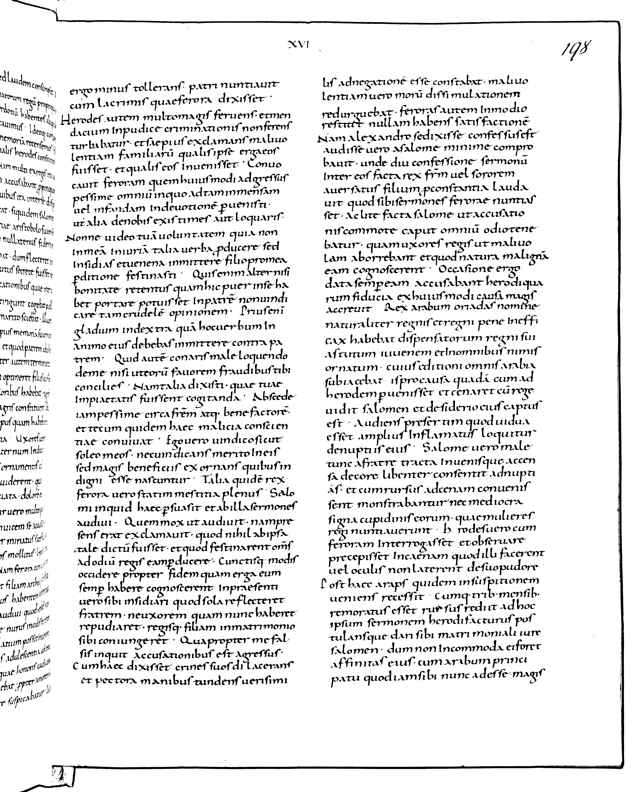
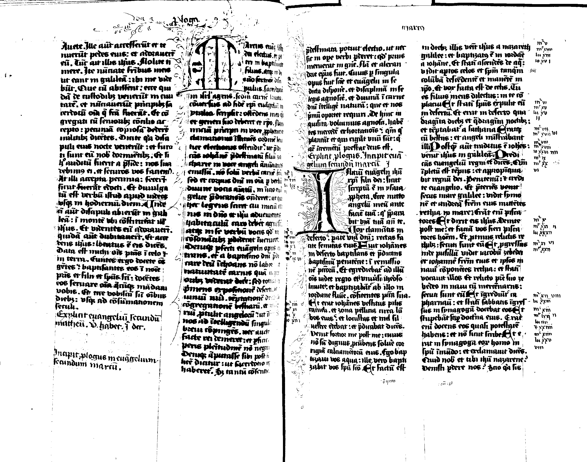

Image List  Page 1  Page 2 Load Original Size Viewer Viewer Tools Debug mode Reset Scene Available Selectors Polygon Rectangle Selector Options Activate Selector Hold Selections Color Options Set Global Color Scheme Available Color Schemes Red Yellow Green Blue Purple Pink Set Selector Colors Selector Stroke Color Red Yellow Green Blue Selector Fill Color None Red Yellow Green Blue Selector Fill Opacity 0 0.1 0.2 0.3 0.4 0.5 0.6 0.7 0.8 0.9 1 Set Detection Colors Detection Stroke Color Red Yellow Green Blue Detection Fill Color None Red Yellow Green Blue Detection Fill Opacity 0 0.1 0.2 0.3 0.4 0.5 0.6 0.7 0.8 0.9 1 Transcripter Tools Mark as Right To Left Mark as Left To Right Selected Region Type Character Line Column Region Options Show All Detected Lines Show All Selected Lines Show Everything Select/Deselect All Lines Activate Viewer Show Toolbox